本文件是 DeepSeek-V4.1-Flash 技术报告的中文全文译本。原报告共 51 页（含参考文献与附录），提出了一种以「KV 缓存压缩」为核心设计目标的多模态 MoE 大模型。译文完整覆盖摘要、正文六章及附录 B/C；附录 A（作者名单）与参考文献保留英文原文。
译本同时插入了原报告的全部 12 幅插图（自原文 PDF 提取），并在图注下附中文译述。
长时程智能体（long-horizon agent）应用的普及，使模型负载日益偏向「重输入」。尽管此前的工作已大幅降低长上下文计算的成本，但预填充（prefill）在计算上仍然昂贵，庞大的 KV 缓存也持续挤压 HBM 与 SSD 的容量以及数据传输带宽。计算、存储与带宽这三重需求，共同构成了进一步降低部署成本的主要瓶颈。为应对这一挑战，我们推出 DeepSeek-V4.1-Flash——一个骨干参数 552B、支持长达 100 万 token 上下文的多模态混合专家（MoE）模型。凭借因果编码器-解码器（CED）架构，该模型在解码阶段每 token 仅激活 16B 参数，预填充阶段更是只需 8B，显著提升了智能体负载的成本效率。
为把 KV 缓存压缩推向极限，DeepSeek-V4.1-Flash 将压缩稀疏注意力 2（CSA2）中的跨层 KV 缓存复用与 FP4 KV 缓存相结合。这些设计将其全局 KV 缓存（常驻 HBM）的占用降到每 token 890 字节，约为 DeepSeek-V4-Flash 的 1/4。此外，通过一项名为 SWA 有界重放（SWA Bounded Replay）的专门部署优化，其持久化 KV 缓存（驻留 SSD 或主机内存）进一步降到 DeepSeek-V4-Flash 的约 1/8。尽管 KV 缓存占用大幅缩小，模型性能反而显著优于基线。
在此基础上，我们对 DeepSeek-V4 架构做了进一步精简，并引入若干高效架构扩展；在包含 45T token 的多模态语料上完成预训练，并进行了系统的后训练，使模型在多样的文本与多模态智能体场景中均表现出色。模型权重已在 huggingface.co/deepseek-ai/DeepSeek-V4.1-Flash 开放。
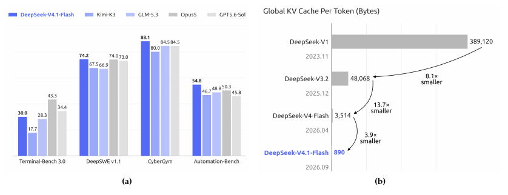
近年来，长时程智能体的应用快速扩张，使超长上下文处理成为越来越重要的模型负载。支撑这类负载不仅需要高效的长序列处理，还需要对大规模 KV 缓存进行持久存储、复用与传输。因此，KV 缓存管理已成为模型部署的一项基础能力，同时也带来了计算、存储与通信三方面的巨大挑战。此前稀疏注意力的进展（DeepSeek-AI, 2025, 2026b）已显著降低长序列处理的计算成本，使持久存储与数据搬运日益成为突出瓶颈。
具体而言，DeepSeek-V4（DeepSeek-AI, 2026b）将横跨全上下文的全局注意力分支与局部滑动窗口注意力（SWA）相结合。全局分支维护全局 KV（含主 KV 与索引器 K），SWA 维护局部 KV 状态。在窗口大小固定的情况下，SWA KV 的存储量与序列长度无关而有界；对足够长的序列而言，全局 KV 主导运行时 KV 占用，并受 HBM 容量约束。此外，部分 KV 会被持久化以复用前缀，称为持久化 KV 缓存（persistent KV cache），受 SSD 与主机内存容量约束；I/O 与互连带宽也限制了缓存的迁移与加载。这些约束共同限制了服务吞吐、推高了部署成本，最终阻碍智能体在更长任务时域、更广应用场景中的部署与普及。
因此，进一步压缩 KV 缓存占用，是缓解存储与通信瓶颈、降低长上下文服务成本的关键。为此，我们开发了 DeepSeek-V4.1-Flash——一个为更激进 KV 缓存压缩而设计的多模态 MoE 模型，拥有 552B 骨干参数，原生支持多模态输入，可容纳最长 100 万 token 的上下文。我们采用因果编码器-解码器（CED）架构：解码器的全局 KV 由编码器最终隐状态投影得到，使模型在预填充阶段每 token 仅激活 8B 参数、解码阶段激活 16B，这对重输入的智能体场景尤其划算。尽管参数量远大于 DeepSeek-V4-Flash，在相同序列长度下，DeepSeek-V4.1-Flash 只需约 1/4 的运行时 KV 缓存与 1/8 的持久化 KV 缓存，且整体性能优于 DeepSeek-V4-Flash。
这种程度的 KV 压缩来自模型架构、缓存精度与部署策略的联合优化。概念上，可以把 DeepSeek-V4 看作「以 SWA 为局部处理主干、辅以压缩后的全局上下文」。这一视角促使我们在基本保留局部注意力设计的同时，专注于精简全局分支。在架构层面，我们设计了压缩稀疏注意力 2（CSA2），对全局 KV（含主 KV 与索引器 K）及 Top-K 索引做跨层复用，大幅削减 KV 缓存存储。CSA2 有三种静态指派模式：Full（全量）、Reindex（重索引）与 Reuse（复用）。Full 模式生成全局 KV 并执行索引；Reindex 模式复用前一层的全局 KV，用自己的索引器 Q 对共享的索引器 K 重新打分、选出新的 Top-K 索引；Reuse 模式同时复用前一层的全局 KV 与 Top-K 索引，直接执行稀疏注意力。三种模式下，每层都保留自己的全局 Q 与 SWA KV。共享全局 KV 与索引器 K 减少了重复缓存；与 DeepSeek-V4 采用的 CSA–HCA 混合架构不同，DeepSeek-V4.1-Flash 采用纯 CSA2。在缓存精度层面，训练期间即使用 FP4 全局 KV 缓存，性能损失极小。CSA2 与 FP4 KV 缓存相结合，将全局 KV 缓存存储降到 DeepSeek-V4-Flash 的约 1/4（见图 1(b)）。
在部署层面，DeepSeek-V4.1-Flash 与 DeepSeek-V4 一样在每一层使用 SWA。DeepSeek-V4 采用混合策略来平衡「持久化 SWA KV 的存储成本」与「精确重建所需的计算」：精确重建需要重放最近 L×nwin 个 token（L 为层数，nwin 为 SWA 窗口大小）。DeepSeek-V4.1-Flash 引入 SWA 有界重放，仅重放最近 nwin 个 token 即可近似重建所需 SWA KV 状态。实验表明这只带来可忽略的性能损失。这一发现确立了新的「存储-计算」权衡：只需少量预填充重算，即可避免将 SWA KV 持久化到 SSD。借助 SWA 有界重放，持久化 KV 缓存占用进一步降到 DeepSeek-V4-Flash 的约 1/8。这些优化极大缓解了 HBM 与 SSD 的容量压力、降低了部署成本，为更大规模的部署铺平道路。
与 CED、CSA2 相辅相成，我们进一步精简了原 DeepSeek-V4 架构，并升级 mHC（Xie et al., 2026）为单趟 mHC（Single-Pass mHC），配套 Mega-mHC 部署算子，将激活内存流量较原四算子实现减半。我们还集成了 Engram（Cheng et al., 2026b）条件记忆模块以增强模型能力，并引入 DSpark（Cheng et al., 2026a）投机解码架构，通过半自回归草稿生成与置信度调度验证来提升解码效率。全部架构改进叠加后，DeepSeek-V4.1-Flash 的单 token 解码 FLOPs 在不同上下文长度下几乎恒定。图 2 显示：上下文长度从 4K 扩展 256 倍到 1M，其解码 FLOPs 仅增加 1/4，远低于 DeepSeek-V4-Flash 的增幅。
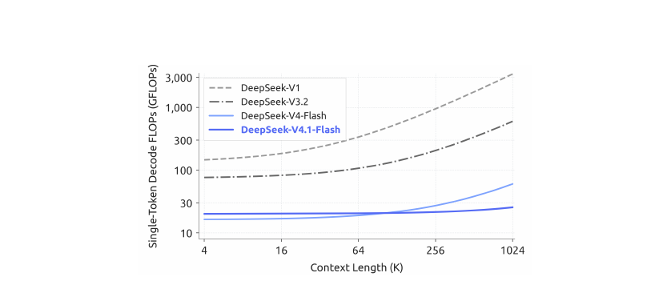
为充分兑现上述架构设计的 KV 压缩收益、进一步提升训练与推理效率，我们对训练基础设施与推理系统做了系统性协同优化，以支撑高效可扩展的多模态大规模训练与长上下文部署。训练基础设施支持视觉编码器分离执行、面向长序列的均衡图像分片，以及面向注意力共享的跨阶段共享状态管理。推理系统实现了编码器与解码器的 SWA 有界重放路径；其他优化包括通信-计算重叠、分片 Engram 嵌入表与推理算子融合。特别地，每个 CSA2 Reuse 模式层在预填充时仅需 15 个算子、解码时仅需 11 个。我们还在主机内存中将长生命周期的全局 KV 存储与短生命周期的编码器 SWA KV 分开管理，利用有界重放近似重建缺失的编码器 SWA 状态。
预训练阶段，DeepSeek-V4.1-Flash 在 45T token 的多模态语料上训练。稀疏注意力从零开始、直接在 64K 序列长度下训练，没有任何稠密注意力预热阶段。预训练后，模型具备原生多模态能力并支持最长 100 万 token 的上下文。评测显示：DeepSeek-V4.1-Flash-Base 在世界知识、推理与代码能力上与 DeepSeek-V4-Pro-Base 相当，并在保留评测集上取得 5%–10% 的提升，而总参数仅为后者的 1/3、激活参数仅为 1/4。这凸显了其出色的参数效率，也反映了面向真实部署的训练数据质量改进。
在该基座模型之上，我们进行后训练以激发其推理与智能体能力。与上述架构创新不同，我们的后训练没有引入算法层面的创新：流程遵循「监督微调（SFT）→ 强化学习（RL）→ 在策略蒸馏（OPD）」的标准范式，除沿用 DeepSeek-V4 开发中已验证的成熟实践外没有任何修改。所有实质性变更都在数据管线上：我们构建了大规模自动化的数据合成与环境构建流水线，并逐步扩展 RL 所用的数据、任务与采样（rollout），从而将模型能力拓展到文本、多模态与智能体领域。图 1(a) 概括了 DeepSeek-V4.1-Flash 在核心智能体基准上的表现。评测表明，尽管体量紧凑，DeepSeek-V4.1-Flash 呈现出鲜明的能力画像：
这些结果表明，DeepSeek-V4.1-Flash 已能在绝大多数基准上比肩闭源前沿模型，可完成 95% 以上的真实任务；同时其小巧的激活规模带来低推理延迟与服务成本。因此我们认为，DeepSeek-V4.1-Flash 在能力与效率之间取得了良好折中，可以作为快速、实惠的助手支撑广大用户的日常工作。总之，DeepSeek-V4.1-Flash 同时提升了模型智能与推理效率、降低了部署成本，大幅拉低了规模化部署长时程智能体的成本门槛，为其在更广泛场景的落地创造了新机会。它也是我们持续扩展（scaling）的新起点：在此基础上，我们将追求模型架构、预训练与后训练的联合扩展，继续探索模型智能的前沿。
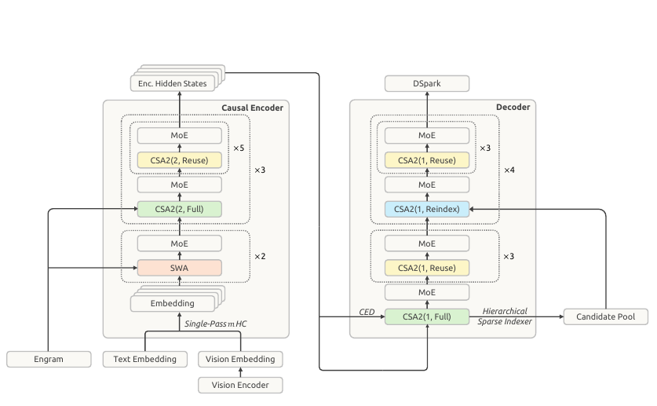
DeepSeek-V4.1-Flash 是一个多模态混合专家（MoE）Transformer：以图像和文本为输入，自回归地生成文本。其语言骨干由 40 层因果 Transformer 层组成，组织为 20 层因果编码器加 20 层解码器。除仅用 SWA 的前两层外，每层同时包含全局注意力与滑动窗口注意力（SWA）。视觉编码器与 MLP 投影器将图像转换为视觉嵌入，与文本嵌入联合处理；多模态数据从语言模型预训练之初即被纳入。总体上，DeepSeek-V4.1-Flash 拥有 552B 骨干参数与 196B Engram 参数，预填充时每 token 激活 8B、解码时激活 16B。图 3 展示了整体架构。
CED 与 CSA2 分别解决长上下文推理中互补的两类成本。CED 让解码器的全局 KV 缓存由编码器输出构建，使大多数 prompt token 无需经历完整的解码器计算，同时保留层内滑动窗口注意力——这将预填充计算几乎减半，降低了上下文不断增长的智能体负载中处理新输入或缓存未命中输入的成本。CSA2 跨层共享全局 KV 以减少缓存存储，并复用稀疏选择以减少索引工作。在解码器中，分层稀疏索引器（Hierarchical Sparse Indexer）让后续索引器只在较早索引器选出的候选池内打分，进一步减少每个 query 需要打分的条目数。
我们保留了 DeepSeekMoE（Dai et al., 2024）的共享专家与细粒度路由专家，并引入面向模态的负载均衡（Wang et al., 2024a）分别处理图像与文本 token。单趟 mHC（Xie et al., 2026）改进了残差流混合方式，使算子融合更高效；Engram（Cheng et al., 2026b）增加了稀疏访问的条件记忆。骨干预训练期间我们省略了 MTP 模块，改用 DSpark（Cheng et al., 2026a）做投机解码，DSpark 在骨干预训练结束后单独训练。此外，我们将主 KV 缓存压缩到 FP4 以进一步降低存储开销。以下小节将描述这些组件及相应的优化改动。
多模态输入通路由视觉编码器与 MLP 投影器组成。对每张输入图像，视觉编码器产生空间网格状的视觉特征；随后 3×3 像素重排（pixel-unshuffle）操作沿通道维重排每个局部邻域，在 MLP 投影器将特征映射到语言骨干隐维度之前降低空间分辨率；最后，得到的视觉嵌入被插入输入嵌入序列中对应的图像 token 位置，由语言骨干与文本嵌入联合处理。
DeepSeek-ViT。我们从零训练了一个名为 DeepSeek-ViT 的视觉编码器，原生支持可变分辨率图像。它基于 Vision Transformer（Dosovitskiy et al., 2021）架构并做了若干修改：为适应任意分辨率输入，用 2D-RoPE 替代标准绝对位置嵌入；为使 ViT 更贴近 LLM 设计原则，用线性投影替换 patch embedding 的卷积，以保证与 Muon 优化器兼容；归一化采用 RMSNorm（Zhang and Sennrich, 2019），激活函数采用 SwiGLU（Shazeer, 2020）。在视觉特征送入 LLM 之前，施加 3×3 下采样的 pixel-unshuffle，将视觉 token 数量缩减为 1/9，可有效支持约 1344×1344 像素以内的输入分辨率。
面向多模态的无辅助损失 MoE 负载均衡。图像与文本 token 的表征分布不同，可能在 MoE 中诱发不同的专家路由偏好。若只平衡二者的合计负载，可能会掩盖模态内部的失衡。为此，我们扩展了无辅助损失负载均衡（Wang et al., 2024a）：为文本与图像 token 分别维护专家级修正偏置。路由时，每个 token 使用其所属模态的修正偏置进行专家选择，同时保留原始路由得分用于加权所选专家的输出。每个训练步之后，两组偏置按各自专家负载独立更新。这一设计在模态内部平衡了专家利用率，有助于多模态训练的稳定与高效。
在智能体工作流中，频繁的工具调用会产生大量预填充请求，一旦 KV 缓存未命中就会带来沉重的计算开销。为缓解这一预填充瓶颈，我们受 YoCo（Sun et al., 2024）启发提出因果编码器-解码器（CED）架构。YoCo 通过让上半部分层直接共享下半部分层生成的 KV 缓存来减少预填充计算；CED 在此概念之上引入一系列结构改进，同时提升了整体 KV 缓存容量与 KV 生成的计算深度。最终，CED 在保持与基线相当性能的同时，成功削减了近一半的预填充计算。
对全局注意力而言，CED 将 Transformer 底部 L/2 层视为因果编码器。对上半部分层（即解码器，l > L/2），KV 条目不再来自各自的隐状态 Hl，而是直接从第 L/2 层的隐状态 HL/2 用层级相关的投影权重（WlKV 与 WlZ）投影得到：
其中 C 与 Z 分别表示 KV 条目及其对应的压缩权重。这一设计使 CED 在预填充阶段只需计算前一半的层，即可用极小的计算代价获得上层全局 KV 缓存。
对 SWA 而言，CED 在所有层保持传统的逐层计算：任意层 l 的局部 key/value 直接由当前层隐状态 Hl 得到。这有效增加了局部 KV 生成的计算深度，但也需要 SWA 重放过程：预填充阶段计算解码器的 SWA KV 需要额外处理 nwin×L/2 个 token（nwin 为窗口大小）。对每轮 prompt 较短的多轮交互而言，解码器的这部分开销不可忽略。所幸先前工作（Chen et al., 2025）表明 SWA 的实际有效感受野远小于理论值 nwin×L/2。受此启发，我们引入解码器 SWA 有界重放：SWA 计算只对 prompt 的最后 nwin 个 token 做预填充，从而显著降低计算成本（详见 3.2.2 节）。
总体而言，对序列长度 N ≫ nwin，CED 将预填充复杂度从 O(NL) 降至 O(NL/2 + nwin×L/2) ≈ O(NL/2)，等效于整体计算量减半。
服务长上下文需要同时控制 KV 缓存存储与注意力计算。这两类成本可以沿三个乘性维度压缩：条目维度——GQA（Ainslie et al., 2023）减少 KV 头数、MLA（DeepSeek-AI, 2024）在头间共享一个小隐变量；序列维度——每 m 个 token 压缩为一个条目，如 DeepSeek-V4 的 CSA 与 HCA（DeepSeek-AI, 2026b）；层维度——部分层复用其他层的缓存或选择而非自建，或整体被更高效的层替代。先前工作已证明层维压缩有效：IndexCache（Bai et al., 2026）跨层复用 Top-K 索引以削减索引器计算；YOIO（Sun et al., 2026b）只计算一次稀疏路由并全网共享；HySparse（Gao et al., 2026）让稀疏层复用稠密层的 KV 缓存。但仅复用索引省不下主 KV 存储、全网路由共享损害性能、混合设计仍保留全注意力层；更重要的是，以上方法没有一个同时覆盖全部三个乘性维度。
CSA2 联合利用三个维度：跨层共享主 KV 与索引器 K，并允许各层复用 Top-K 索引，且缓存共享与索引复用相互解耦。它将这些复用策略与简化后的压缩器及分层稀疏索引器（用于缩小解码器中后续索引层的搜索域）相结合。
与 CSA 类似，CSA2 包含一个轻量索引器，用索引器 Q 与索引器 K 给主 KV 条目打分，为每个 query 选出 Top-K 条目。每个 Q 与被选条目及层内滑动窗口 KV（SWA KV）一起做注意力。CSA2 也把不压缩的主 KV 设定作为压缩比为 1 的特例。同时，CSA2 简化了压缩器与索引器：在 CSA 中，压缩比 m 会从 2m 个原始 KV 缓存条目生成一个主 KV 条目，相邻压缩条目的源条目相互重叠，且包含绝对位置嵌入来编码这 2m 个条目在压缩时的位置；CSA2 去掉了这种重叠与绝对位置嵌入。此外，CSA2 通过投影主 KV 条目获得索引器 K，取代 CSA 从隐状态出发的独立压缩路径。这两项设计简化了实现并提升了训练效率。
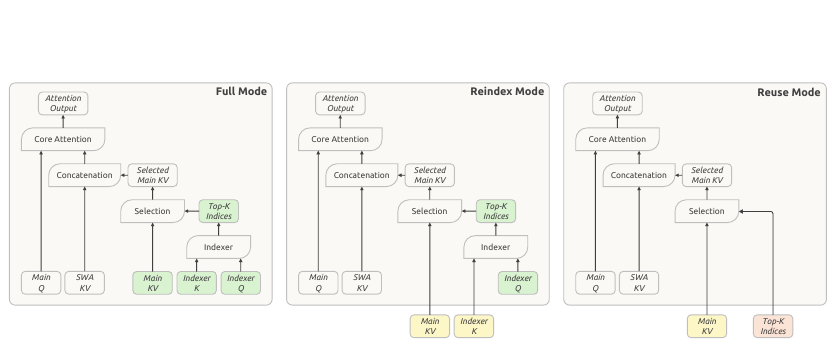
每个 CSA2 层被静态指派为三种模式之一：Full、Reindex 或 Reuse。三种模式下，层都计算自己的 query 与 SWA KV，并与选出的主 KV 条目一起产生注意力输出。差异在于如何获得主 KV、索引器 K 与 Top-K 索引（图 4）。
共享主 KV 与索引器 K 降低缓存存储；复用 Top-K 索引免去额外的索引器计算。Reindex 模式在保持缓存共享的同时允许所选条目跨层变化。当 CSA2 与 CED 结合时，解码器中被指派为 Full 模式的层从第 L/2 层（因果编码器最后一层）的隐状态计算自己的全局 KV；Reindex 与 Reuse 模式保持不变。
跨层索引复用减少了索引器求值次数，但剩余索引器仍要对全部因果可见上下文打分。对极长上下文，这仍是主要计算瓶颈。先前工作通过在 token 级索引前对池化块表征打分并剪枝来引入索引器稀疏性（Xu et al., 2026b）。我们发现在解码器中，浅层索引器的信息可自然地用来约束深层索引器的候选范围，而无需任何额外状态。为此我们提出分层稀疏索引器，仅用于 CED 的解码器，以减少解码时重复打分。对每个 query，第一个 Full 模式层构建候选池，后续重索引层以它为搜索域。在候选池大小固定的情况下，这将深层索引器的每 query 成本从随上下文长度线性增长变为常数。该机制是训练感知的，并在后训练中引入：候选约束在训练与推理中完全一致地施加，因此深层索引器在其推理时所用的同一搜索域下被优化。图 5 展示了这一过程。
第一个 Full 模式层对所有因果可见的主 KV 位置打分，为自己产生 Top-K 索引；同时做分块候选选择：每个块取其位置中的最大索引分作为块分数，选出分数最高的块，再将被选块覆盖的位置收集为一个大于最终 Top-K 集合的候选池。例如选 2,048 个块、每块 8 个位置，可得到 16,384 个候选位置。该池定义了后续索引器的搜索范围；最终 Top-K 选择决定每层读取哪些主 KV 条目。
后续 Reindex 模式层只对候选位置为相应 query 打分，并在池内选出自己的 Top-K 条目。Reuse 模式层不做新索引，直接使用针对其复用主 KV 计算的最新 Top-K 索引。因此候选池在索引层之间共享，而各自的最终选择可以不同。候选池大小固定时，每个后续索引器每 query 打分的位置数与上下文长度无关、有界。第一个 Full 模式层仍扫描全范围因果可见区间。分层索引因此降低了后续索引器求值成本，同时保留了初始全范围扫描。
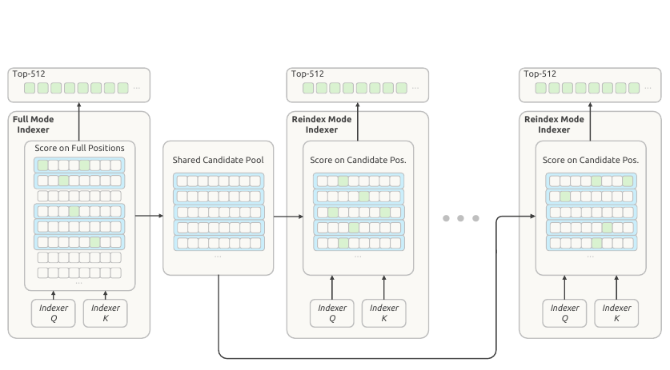
在 DeepSeek-V4 中我们引入了 mHC（Xie et al., 2026）：在相邻 Transformer 块之间维护 n 条残差流。对每个 token，记这些流为 Xl ∈ Rn×d（l 为块序号，d 为隐藏维度），更新方式为：
其中 Al ∈ R1×n、Cl ∈ Rn×1、Bl ∈ Rn×n 是由 Xl 预测的逐 token 系数，系数预测器 H 包含归一化与投影。
理想情况下，两个块之间的残差变换是 (Xl−1, Yl−1) 到 (Xl, X̂l) 的单一映射，其中 X̂l = AlXl 为当前块输入、Yl−1 = Fl−1(X̂l−1) 为上一块输出。该映射需要 (n+1)d 次读与 (n+1)d 次写，激活内存流量下界为 (2n+2)d。实践中 DeepSeek-V4 采用式 (2) 的多趟实现，三个算子因数据依赖而串行执行，共读 (n+1)d + nd + nd、写 (n+1)d；加上 Fl 中的 pre-norm，总激活内存流量为 (4n+4)d，是下界的两倍。
在 H 中，归一化权重已离线折叠进投影权重，RMS 除法在投影之后施加。因此三个阶段中有两个可以共享一次残差遍历：残差更新不需要对隐藏维度归约，Xl 的每个分块可即算即用于累加投影输出和计算 RMS 所需的平方和。而输入混合无法融入这一趟，因为 Al 要等所有隐藏分块的归约完成才可用，所以需要第二次读 Xl（该趟可同时完成输入 pre-norm）。这个两趟实现共需 (3n+2)d 次激活读写，比下界多一次 Xl 读。
为此我们提出单趟 mHC：把输入混合系数错开一个块——每个块消费前一个块产出的混合系数，上述依赖随之消失：
输入混合改用 Al−1 而非 Al，不再依赖由 Xl 算出的系数，因此每个分块可立即同时用于输入混合与系数预测，无需等待完整归约。实证表明这种错位几乎不损失性能。
预训练继续沿用现有多算子实现（错位只改变各块应用哪份混合系数）。部署时，我们将残差更新、输入混合与系数预测融合为单一算子 Mega-mHC：它以 (3n+2)d 的激活读写实现 mHC、以 (2n+2)d 的激活读写实现单趟 mHC。Mega-mHC 沿隐藏维度分块处理 Xl，每个分块既用于计算混合输入，也用于累加预测下一块 (Al, Bl, Cl) 所需的量；算子还内置输入 pre-norm 与 FP8 转换。残差因此只读一次、写一次，达到理想映射的 (n+1)d 读 + (n+1)d 写，将原实现的激活内存流量减半。
我们为 DeepSeek-V4.1-Flash 加装 Engram（Cheng et al., 2026c）——我们此前工作提出的条件记忆模块，用于将「记忆」与「计算」解耦。我们沿用 Engram 原设计（分词器压缩、多头哈希、上下文感知门控、多分支整合），只做两处修改：其一，去掉短因果卷积，因为其性能收益在我们的推理栈中不值得增加的复杂度；其二，对 Engram 嵌入采用「动量更新 + Sinkhorn 平衡」的优化方式（详见 2.5 节）。我们为两个模块共分配 196B Engram 参数：每个模块使用 N-gram 阶数 {2, 3, 4}、8 个哈希头、每阶总嵌入维度 2048；每个头索引约 1600 万条目的表，表大小取不同素数。嵌入表与 key/value 投影均用 FP8 精度。两个模块放在第 1 层与第 14 层（零起算），以平衡训练流水线各阶段的内存占用。推理时，确定性寻址使嵌入可以通过后台 RDMA 从主机内存预取，第一个模块的预取与第一个 Transformer 块的计算重叠。Engram 训练与推理的更多实现细节见 3.1.3 节。
我们为 DeepSeek-V4.1-Flash 配备 DSpark（Cheng et al., 2026a）——一个将半自回归草稿生成与置信度调度验证相结合的投机解码模块。草稿器由三个 Transformer 块组成，滑动注意力窗口为 128 token；一次前向即可并行计算 5 个草稿位置的基础 logits，同时一个轻量马尔可夫头建模草稿 token 间的依赖。置信度头预测每个位置的条件接受概率，用于估计前缀存活概率；调度器将这些估计与实测引擎吞吐曲线结合，动态选择每个请求的验证长度，目标是在当前系统负载下最大化系统级 token 期望吞吐。
与 DeepSeek-V3（DeepSeek-AI, 2024）全程与骨干联合预训练的 MTP 模块不同，DSpark 在预训练结束后的专门阶段引入：该阶段只训练 DSpark、冻结骨干。后训练期间继续与骨干一起训练 DSpark，但不把 DSpark 目标的梯度回传到骨干。这使 DSpark 与不断演进的策略保持一致，从而能同时加速在线服务以及 RL 与 OPD 的 rollout 生成。
长上下文智能体负载需要巨大的每请求 KV 缓存，推高服务成本。DeepSeek-V4 已对 FP4 索引器 query/key 使用量化感知训练（QAT）（Jacob et al., 2018），加速索引计算并缩小索引器缓存。我们采用 OCP 标准的 MXFP4 格式（Rouhani et al., 2023）以兼容尽可能多的硬件平台，尽管实验中其他格式精度更高。现在我们把 QAT 扩展到主 KV 缓存——FP4 在此用于减少存储而非加速矩阵乘法。注意力计算前先反量化缓存值，因此可以使用更精确的格式而无需该格式具备原生矩阵乘支持，保持跨硬件平台兼容。
在评测过的约 4-bit 格式中，我们选择 E2M1、每 16 通道一个 E4M3 scale——遵循 NVFP4（Alvarez et al., 2025）但省去其二级全局 scale，以平衡精度与简洁。省去该 scale 后主 KV 缓存仍有充裕的动态范围：该格式可表示最大 448×6 = 2688 的幅值，远超缓存幅值上界。DeepSeek-V4.1-Flash 中训练出的最大 RMSNorm 权重幅值约为 1；经 RMS 归一化后，512 通道 KV 隐变量的 L2 范数至多约 √512，RoPE 保持该范数，因此旋转后各通道最大绝对值也以约 √512 ≈ 22.6 为界；训练中实际观测到的最大幅值约 10。因此省去全局 scale 不会带来可测的精度损失，还简化了缓存布局。
为在 DeepSeek-V4.1-Flash 中启用 FP4 主 KV 缓存，我们在后训练期间引入 QAT。非 RoPE 与 RoPE 分量使用相同量化格式；我们在 RoPE 之后量化缓存——实验中在 RoPE 之前量化只带来边际精度提升，却会在解码时引入额外开销。SWA KV 缓存对量化敏感，故保留 FP8。与 DeepSeek-V4 的 FP8 主 KV 缓存相比，该格式将 HBM 与 SSD 卸载两处的存储占用都近乎减半。
在 DeepSeek-V4 优化配置的基础上，我们做了若干新修改，以更好地契合架构设计。
其一，按头 Muon（head-wise Muon）：Query 权重按头拆分后再施加 Muon 更新。把 Muon 视为预条件化的梯度下降：原生 Muon 对所有头共用一个预条件子，而按头 Muon 为不同头提供不同预条件子，能更好地处理注意力头间的异质性（Zhang et al., 2024; Zhang, 2026, 第 3 节）。因此我们观察到按头 Muon 优于原生 Muon；这一经验优势也在 GLM 5（Zeng et al., 2026）与 Kimi-K3（Team et al., 2026a）中得到验证。
其二，Sinkhorn 平衡更新：对新引入的 Engram 参数使用 Adam 会大幅增加优化器状态内存。为降低训练内存，我们改用「动量更新 + Sinkhorn 平衡」来优化 Engram 嵌入表、token 嵌入与预测头。Sinkhorn 平衡此前在 SinkGD（Scetbon et al., 2025）中用于线性层权重矩阵，这里我们把它扩展到这些大参数矩阵。与 Muon 一样，该方法只需一个动量缓冲，实证表现优于 Adam。
基本配置。归一化层权重及其他非矩阵参数（偏置、缩放因子）沿用 AdamW（Loshchilov and Hutter, 2019）。语言骨干线性变换权重矩阵、Engram 投影层与视觉-语言投影器使用 Muon（Jordan et al., 2024）；Query 与 Key 权重使用按头 Muon。Muon 施加解耦权重衰减与 Nesterov 动量（Nesterov, 1983; Liu et al., 2025）；归一化层权重同样做权重衰减，偏置与缩放因子不做。Sinkhorn 平衡更新也用 Nesterov 动量但不做权重衰减。预训练期间，视觉编码器保持冻结直至学习率衰减阶段（其最末归一化层与视觉-语言投影器保持可训练）；学习率衰减开始时解冻视觉编码器，以较小学习率与 LLM 联合优化。
面向 Engram / 嵌入 / 预测头的 Sinkhorn 平衡更新。完整流程见算法 1。宏观上它与 Muon 工作流相同，只是用 Sinkhorn 平衡取代 Newton–Schulz 正交化。记矩阵较大维度为 m（对嵌入表与预测头即词表大小），隐藏维度为 n。给定 Nesterov 动量更新 Ĝt，Sinkhorn 平衡寻找对角缩放矩阵 Dr 与 Dc，使：
即近似均化更新矩阵的行 RMS 与列 RMS：一行对应一个 token 索引或 n-gram 身份，一列编码一个隐藏特征。Sinkhorn 平衡利用这种「token-特征」结构做行、列双向归一化。为数值稳定，满足 ρi ⩽ τ·ρ̄ 的行被掩蔽。因子 √n 把单位行 ℓ2 范数换算为单位行 RMS。另外，我们把有效学习率调整为 η̃t = γηt 以匹配 Adam 的更新幅度，取 γ = 0.18，接近 Moonlight（Liu et al., 2025）使用的 0.2。
更广泛地说，Sinkhorn 平衡与利用矩阵/张量轴结构的优化器密切相关（Shazeer and Stern, 2018; Zhang et al., 2025a; Wen et al., 2025; Glentis et al., 2025; Deng et al., 2026; Yuan et al., 2026; Xu et al., 2026a）。例如 Adafactor（Shazeer and Stern, 2018）以不同方式做行/列归一化，Adam-mini（Zhang et al., 2025a）对嵌入表与预测头使用另一种行归一化。这些归一化策略在优化性能与通信开销上可能各有差异，我们留待后续深入研究。
对比学习中的通信-计算重叠。视觉编码器先以对比目标优化，再用生成式下一 token 预测损失微调。对比阶段的损失在整批文本-图像对上计算，因此两种模态的特征都要在数据并行 rank 间 all-gather，通信量可观。由于文本特征的梯度只依赖收集到的视觉特征（反之亦然），每次 all-gather 都可与前向或反向计算重叠而非阻塞流水线：
其中 V、T 为视觉/文本特征，(A ∥ C) 表示计算 A 与通信 C 重叠，∇ 表示梯度计算。该调度下，视觉特征在文本前向期间收集、文本特征在文本反向期间收集，两次 all-gather 完全隐藏在有效计算之后。
端到端并行。为处理视觉编码器与 LLM 之间的模型与数据异构性（Zhang et al., 2025b），我们采用近期训练系统使用的分离编码器设计（Team et al., 2025, 2026b）：视觉编码器复制在 LLM 参数树之外，每个训练步分三阶段——视觉编码器前向、LLM 前向/反向、视觉编码器反向。这种分离避免视觉编码器与 LLM 计算互相干扰；负载均衡的视觉处理只限于第一与最后阶段，LLM 阶段不含视觉计算，保持纯文本训练的并行策略。
长序列多模态训练优化。DeepSeek-V4.1-Flash 在最长 100 万 token 的序列上训练，预训练与后训练都有相当比例的超长序列训练。在这种长度下，多模态样本造成沉重的 I/O、CPU 与内存瓶颈。
2.3 节介绍的 CSA2 是一种注意力共享方法，其三种模式会在多层之间共享主 KV、索引器 K 与 Top-K 索引中的一项或多项。在大规模分布式训练中支持 CSA2，需要注意力计算之外的额外协调：共享注意力组件的层可能位于不同流水线阶段，直接模块复用与常规的阶段内执行不兼容。为此我们采用以下设计支持 CSA2 训练。
配合对优化器、检查点、预热与计算图追踪工作流的轻量适配，这些机制使 CSA2 能在现有分布式训练接口与流水线调度下透明运行。
Engram 嵌入表按行切分到 engram 并行大小的专用进程组；组大小控制每设备内存占用与嵌入查找通信范围之间的权衡。优化器状态进一步在每张表分区的各副本间分片。Engram 查找索引仅取决于输入 token 序列，因此嵌入预取在每个流水线阶段开始处理当前训练步的微批之前、对整个本地批次发起，最大限度减少对流水线执行的干扰。嵌入梯度在反向期间缓冲，骨干反向结束后归还给所属 rank。为与多模态训练高效集成，嵌入预取与梯度传输被调度为与视觉编码器前/反向计算重叠。嵌入以 FP8 存取，取回的值与缩放因子直接送入后续 GEMM。Engram 表更新中，Sinkhorn 归一化跨迭代维护行/列缩放向量，避免重复写入完整归一化矩阵；行归一化与部分列统计累加融合为单一算子，进一步减少内存流量。RL rollout 期间，Engram 嵌入表常驻 GPU 显存，降低主机内存压力，避免主机内存碎片导致的 OOM 失败。
DeepSeek-V4.1-Flash 从设计之初就把推理效率作为一等公民。虽然其架构概念上复杂，但最终推理算子流非常精炼：通过合理的算子融合，我们把繁杂操作封装进少量融合算子并让硬件资源充分流水化——包括 FlashMLA（Li and Liu, 2025）中融合 RoPE-注意力-RoPE-转换的算子、DeepGEMM（Zhao et al., 2025）中的 Mega-Gate、Mega-mHC 与 Mega-MoE 算子、TileKernels（Wang et al., 2026a）中的算子，以及 DeepSelect（Qian et al., 2026）的 TopK 算子。结果，绝大多数 Transformer 层（CSA2 处于 Reuse 模式的层）在预填充时只需 15 个算子、解码时只需 11 个，同时达成高吞吐与低延迟推理。
部署层面，我们采用编码器-预填充-解码（EPD）分离，使视觉编码、预填充与解码可独立扩缩并重叠执行。
在相同负载下，V4.1 将持久化 KV 缓存占用降到 V4 的 1/8。这来自两个乘性因子：持久化缓存不再存 SWA KV（体量近乎减半），且其中的全局 KV 经架构与精度优化进一步压缩到 V4 的 1/4。
在 V4 部署中，SWA KV 占持久化 KV 缓存容量的近一半。该缓存内，全局 KV 与 SWA KV 独立管理、统一受 LRU 淘汰策略约束：全局 KV 全量存储，命中即完整复用前缀；SWA KV 只在两个特定点缓存——prompt 末尾与输出末尾，以便再生成与多轮会话，命中后计算可从缓存位置继续。为保持高命中率，我们在 SSD 上配置了足够大的持久化 KV 缓存，使典型负载下两类 KV 都可驻留 72 小时以上。尽管只在指定位置保留 nwin 条 KV，未压缩的 SWA KV 缓存仍有可观存储开销，在短轮次多轮对话中尤甚。
持久化存储 SWA KV 既昂贵又低效，因为其访问模式与持久化缓存的长驻留策略不匹配：与呈长尾复用的全局 KV 不同，SWA KV 只在活跃会话内分钟级窄窗口内被复用，会话结束或下一轮开始即成死数据。V4 技术报告提出零 SWA 缓存（Zero SWA Caching），通过重算缺失 SWA KV 避免存储开销；但精确恢复需要对 L×nwin 个 token 做完整前向，生产部署中成本过高。
因此 V4.1 修改持久化 KV 缓存管理如下：
由于 SWA 依赖跨层累积，精确重建 L 层的 SWA KV 需要重放 L×nwin 个 token。SWA 有界重放只重放最近 nwin 个 token 并把 SWA 截断到重放段，接受近似状态：对从位置 s 开始的重放，位置 i 的 query 只注意 [max(s, i−W+1), i] 内的 SWA key。
编码器 SWA 有界重放。使前缀缓存只依赖全局 KV，从而允许把 SWA KV 移出持久化缓存。当编码器 SWA KV 缺失时，我们重放缓存前缀的最后 nwin 个 token，并与未缓存后缀一起处理：重放 token 只再生成 SWA KV（复用缓存的全局 KV，不重算也不覆写），未缓存后缀则同时生成全局 KV 与 SWA KV。重放前缀状态按设计是近似的，因此未缓存后缀的全局/SWA KV 依赖缓存命中位置、在数学上不跨位置一致。令人鼓舞的是，实验证据证实这种有界重放几乎不损害响应质量。
解码器 SWA 有界重放。把解码器前向限制在 nwin 个 token，使总预填充计算近乎减半。在 CED 下，解码器全局 KV 由最终编码器隐状态投影得到；在编码器处结束预填充的唯一障碍是解码器 SWA KV——它由各解码器层自己的隐状态生成、又被最初的解码步骤需要。由于我们从不缓存解码器 SWA KV，精确重建需要让 2L 解码器层跑过最后 (L/2)×nwin 个 prompt token，当长的缓存前缀后跟短的未缓存后缀时代价高昂。因此对这一场景同样应用有界重放：每次预填充重放 prompt 最后 nwin 个 token，将其编码器输出在同样 SWA 截断下通过解码器层，得到的解码器 SWA KV 只用于解码、不用于前缀缓存。重建的解码器 SWA KV 按设计不等价于完整解码器前向的结果，但我们发现该策略对响应质量影响可忽略。出于安全考虑，后训练期间还模拟同样的重放，做训练感知适配。
文本数据治理。为追求更高智能，我们超越小规模数据实验反映的样本级质量，更关注语料间能带来独特信息增益的整体交互。我们采用更系统、更标准化的数据构建流水线来提升数据质量并优化数据配比。具体而言，基于更全面的评测，精心设计覆盖模型参数与训练数据的扩展阶梯（scaling ladder）来引导大规模训练。我们过滤掉信息增益有限的模型生成内容，包括较弱模型的输出与低质量机器翻译文本；我们把这类内容视为「隐性重复」——它们大多在复述既有信息，长期训练中可能有害。我们还探索了模型在环（model-in-the-loop）的数据迭代方法，作为未来大规模合成数据的基础。此外，我们引入更多领域专家构建细粒度的数据质量评估维度。与上一版相比，新语料纳入了更多来自新发布开源仓库、提交、库与新兴框架的最新代码，覆盖更广的编程语言，更好反映当代真实软件工程场景。
多模态数据治理。多模态预训练数据主要包括三类：图文对、图文交错数据与领域专用数据。基于「原始网络数据天然蕴含丰富多模态知识」的前提，我们克制了大规模数据合成，优先清洗并原生利用数据，以在预训练中实现最直接、最可扩展的视觉知识压缩。初期采集中我们发现爬取系统过度偏向以文本为中心的网页内容，因此基于 Common Crawl 重建了爬取系统，以改善多模态来源覆盖。图文数据方面，我们从网页提取图像及其替代文本（alt text），按图文相关性阈值过滤，并基于图像语义去重。交错数据主要来自网页与 PDF。处理大规模多模态语料的 CPU 与磁盘成本高于纯文本，因此我们把交错数据构建组织为成本递增的多阶段：图像检索前先做启发式与统计过滤、去重和质量模型筛选高价值文档；幸存文档组装为图文交错序列后，再以图像感知方式做一轮过滤与去重；最后用 SmolVLM（Marafioti et al., 2025）对图文内容做严格质量评分，提取高质量交错数据。被过滤的文档部分经筛选重组回收为额外的图文对。为弥补网络数据的固有限制，我们还纳入领域专用数据集，增强细粒度视觉感知（如视觉定位与指向）、OCR 及长尾知识获取能力；并收集了大量图像-代码对与计算机使用（computer-use）轨迹，以提升多模态智能体理解。
数据整合与去重。文本与多模态数据经不同流水线处理，最终训练语料取二者并集：重叠样本用多模态版本替换纯文本版本，并取两种配置中较大的 epoch 数。替换后，语料按纯文本 : 多模态 = 7 : 1 的 token 比例构成。我们通过联合预取与分配训练样本，尽量减少预训练与上下文扩展阶段的样本重叠；超长文档在混合前做确定性预切分，确保训练 token 在数据分片与训练步上均匀分布。我们还进一步改进最优适配装箱（best-fit packing）算法，填充率至多 10−4。
Transformer 层数设为 40、隐藏维度 d = 5120。采用因果编码器-解码器架构，编码器与解码器各 20 层。前两层用纯滑动窗口注意力；编码器其余 18 层使用压缩比 m = 2 的 CSA2，分为三组配置相同的 6 层——每组第一层为 Full 模式，其余 5 层为 Reuse 模式。解码器 20 层使用压缩比 m = 1 的 CSA2，分为 5 组、每组 4 层——第一组第一层为 Full 模式、其余 3 层为 Reuse 模式；其余 4 组配置相同：第一层为 Reindex 模式、其余 3 层为 Reuse 模式。所有 CSA2 层：索引器 query 头数 32、索引器头维度 128、稀疏注意力选出的 KV 条目数（attention top-k）512；query 头数 64、头维度 512、query 压缩维度 1280。分层稀疏索引器最多选 2,048 个块、每块 8 个位置，共至多 16,384 个候选位置。输出投影组数 8，每个中间注意力输出维度 1024。SWA 附加分支的窗口大小 nwin = 128。所有 Transformer 块采用 MoE 层，SwiGLU 激活带钳位（OpenAI, 2025），阈值 10。每个 MoE 层由 1 个共享专家与 384 个路由专家组成，每专家中间隐维度 2304；每 token 激活 6 个路由专家。mHC 扩展因子 4，Sinkhorn-Knopp 迭代 20 次。视觉编码器 32 层、隐维度 1024、16 个注意力头、patch 大小 14；视觉 MLP 投影器 2 层、隐维度 5120。该配置下，DeepSeek-V4.1-Flash 共 552B 骨干参数，预填充每 token 激活 8B、解码 16B。
线性变换参数用 Muon 优化器（Jordan et al., 2024; Liu et al., 2025），所有 RMSNorm 模块权重与其他非矩阵参数用 AdamW（Loshchilov and Hutter, 2019），所有嵌入与预测头用 Sinkhorn 平衡更新。AdamW 超参：β1 = 0.9、β2 = 0.95、ε = 10−20、weight_decay = 0.1。Muon：动量 0.95、权重衰减 0.1，每次更新矩阵 RMS 重标定到 0.18 以复用 AdamW 学习率。Sinkhorn 平衡更新：动量系数与学习率修正因子与 Muon 相同，K = 11、τ = 10−3、ε = 10−20。Engram 学习率按（Cheng et al., 2026b）放大 5 倍。我们在 45T token 多模态数据上训练，全程无不稳定。批次大小全程固定为 1.006 亿 token。学习率先线性预热 2000 步，随后保持 2.6×10−4 直至 28T token；28T–40T 间按余弦衰减到 2.6×10−5；40T–45T 保持该值。模型从零开始、在 64K 序列长度下以稀疏注意力训练，34T token 时扩展到 1M 序列长度。无辅助损失负载均衡对图像与文本 token 的偏置更新速度均为 0.001，同时保留损失权重 0.0001 的序列级平衡损失以防单序列内极端失衡。与 DeepSeek-V4 类似，预训练采用样本级注意力掩蔽。
视觉编码器训练。DeepSeek-ViT 在与语言骨干整合前单独训练，分两阶段：对比预训练与自回归微调。对比预训练用 SigLIP（Zhai et al., 2023）的 sigmoid 对比损失，在约 470 亿图文对（源自 alt-text 数据）上优化；为高效学习视觉表征，该阶段将最大输入分辨率限制在 224×224（等比缩小更大的图）。尽管此阶段用更高分辨率有显著增益，但实证表明这些增益对最终模型贡献甚小——因为后续自回归阶段专门负责高分辨率外推，对比预训练阶段抬升分辨率会显著增加计算而整体提升有限。自回归微调阶段，把视觉编码器接到一个 4B MoE LLM 上，在图像描述、alt text、图表、OCR 等数据集共 236B token 上以下一 token 预测目标训练，旨在增强编码器建模细粒度视觉特征的能力；输入分辨率约束在 544×544 至 1344×1344 像素（越界等比缩放）。此阶段结束后丢弃 LLM，只保留优化好的视觉编码器进入后续预训练流程，并沿用同样的分辨率策略。
我们将 DeepSeek-V4.1-Flash-Base 与前代 DeepSeek-V4-Flash-Base、DeepSeek-V4-Pro-Base 比较，覆盖五个维度：世界知识、语言理解与推理、代码与数学、长上下文、多模态能力。
表 1 在我们内部评测框架、严格受控且可复现的设置下，详细比较了 DeepSeek-V4-Flash、DeepSeek-V4-Pro 与 DeepSeek-V4.1-Flash 的基座模型。与两个前代相比，最新基座模型展现了亮眼的效率增益：DeepSeek-V4.1-Flash 激活参数远小于 DeepSeek-V4-Pro-Base、KV 缓存占用大幅缩减，但性能完全持平前代。这些结果也反映了预训练数据治理管线的实质性改进。本版引入原生多模态训练，并通过相应多模态评测验证了其有效性。在更多样、多模态的语料上训练后，DeepSeek-V4.1-Flash 的世界知识与理解能力与 DeepSeek-V4-Pro 相当；在推理与代码基准上稳定进步，多个基准接近或超过 DeepSeek-V4-Pro。
为进一步评估模型在真实研发场景的能力，我们还在专属内部语料上做了困惑度测试。由于困惑度无法通过模型 API 测得，我们只测自家预训练基座。语料选取上，基于日常研发收集了独立评测集，包括内部文档、专有代码仓库与学术资料，瞄准复杂科学问题与前沿研究的推理、归因与解题能力。结果见图 6，我们报告各模型的每字节比特数（BPB），越低越好。
| 基准（指标） | # Shots | DeepSeek-V4-Flash Base | DeepSeek-V4-Pro Base | DeepSeek-V4.1-Flash Base |
|---|---|---|---|---|
| 架构 | – | MoE | MoE | MoE |
| 激活参数 | – | 13B | 49B | 8B / 16B |
| 骨干参数 | – | 284B | 1.6T | 552B |
| 世界知识 | ||||
| AGIEval（EM） | 3–5-shot | 83.9 | 84.4 | 83.4 |
| MMLU-Pro（EM） | 5-shot | 68.3 | 73.5 | 74.1 |
| C-Eval（EM） | 5-shot | 92.1 | 93.1 | 92.1 |
| MultiLoKo（LLM-Judge） | 5-shot | 42.6 | 50.9 | 45.5 |
| SimpleQA-Verified（EM） | 25-shot | 30.1 | 55.2 | 42.3 |
| SuperGPQA（EM） | 5-shot | 46.5 | 53.9 | 53.1 |
| 语言理解与推理 | ||||
| BBH（EM） | 3-shot | 86.9 | 87.5 | 86.1 |
| BBEH（EM） | 1-shot | 25.4 | 29.8 | 27.2 |
| DROP（F1） | 1-shot | 88.6 | 88.7 | 87.9 |
| HellaSwag（EM） | 0-shot | 85.7 | 88.0 | 87.2 |
| 代码与数学 | ||||
| BigCodeBench（Pass@1） | 3-shot | 56.8 | 59.2 | 60.6 |
| HumanEval（Pass@1） | 0-shot | 69.5 | 76.8 | 79.4 |
| GSM8K（EM） | 8-shot | 90.8 | 92.6 | 93.0 |
| MATH（EM） | 4-shot | 57.4 | 64.5 | 61.1 |
| MGSM（EM） | 8-shot | 85.7 | 84.4 | 80.2 |
| 长上下文 | ||||
| LongBench-V2（EM） | 1-shot | 44.7 | 51.5 | 45.2 |
| 多模态 | ||||
| MMMU-Pro（EM） | 4-shot | – | – | 56.5 |
| CVBench（EM） | 4-shot | – | – | 77.9 |
| DocVQA（LLM-Judge） | 4-shot | – | – | 95.6 |
| RefCOCO-avg（Acc@0.5） | 0-shot | – | – | 86.0 |
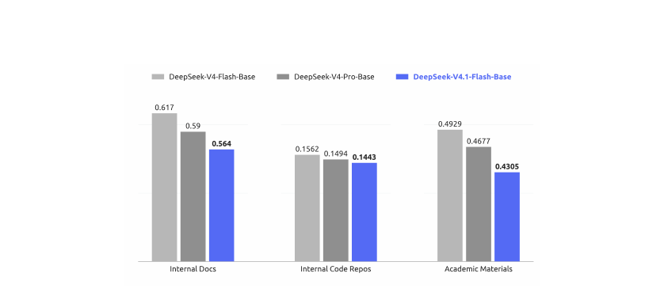
本版后训练不引入新算法。整体配方遵循「监督微调（SFT）→ 强化学习（RL）→ 在策略蒸馏（OPD；Gu et al., 2024; Lu and Lab, 2025）」的标准范式，除成熟实践外无算法修改。我们的精力几乎全部投入在「模型训练在什么数据上」而非「如何优化」：投资建设大规模、自动化的数据合成与环境构建流水线。具体而言，该流水线 (i) 合成多样、可验证的训练任务及其参考解与奖励信号；(ii) 程序化构建并规模化可低成本采集与评估轨迹的交互式智能体环境；(iii) 施加严格过滤、去重与难度校准，保证数据质量与课程平衡。我们发现：在固定而平淡无奇的优化流程下，合成数据与环境在规模、多样性、可验证性上的系统化改进，几乎解释了全部观测收益。这印证了一个更普遍的教训：在当前阶段，打磨数据与环境管线的边际收益显著超过后训练的算法新颖性。
任务是智能体学习的基本燃料。然而构建高质量训练任务传统上需要大量人工。我们观察到模型已开始展现自主构建训练任务的能力（尽管远非完美）。认识到这一潜力后，我们投入大量精力强化模型的任务构建与质量核验能力。
我们把每个任务形式化为三元组（问题，环境，验证系统），并沿两个维度评估质量：难度——确保任务非平凡；正确性——确保三元组之间不存在关键缺陷。以难度与正确性为奖励信号，迭代训练模型构建更好的任务。我们还对 RL 任务做全生命周期监控：每当任务被用于新一轮 RL run，产出的轨迹就为质量复审提供新证据。在这一通用框架下，我们为两大核心场景建立了专门的环境生产流水线：通用智能体与编码智能体。
通用智能体。我们鼓励内部员工与外部合作伙伴把最新模型融入日常工作流，并在自愿基础上回传交互数据与反馈。基于回传数据中观察到的接口，我们构建了大量模拟工具（mocked tools），复现真实工具与系统的接口与行为——包括输入格式、输出结构、API schema 与行为约束——既覆盖常用 SaaS 与企业应用，也覆盖更专业的业务后端系统。并行地，我们大规模收集内部员工提交的负面反馈与模型失败案例，纳入流水线，生成扎根于真实工作流的单轮与多轮智能体环境。通过重建相关工具上下文、用户交互模式与失败条件，流水线支持系统性重放失败，并针对观测到的模型弱点做定向强化学习。
编码智能体。编码智能体训练环境来自两个来源：1) 内部员工与外部合作伙伴的编码智能体会话，过滤保留高复杂度任务或模型表现差的任务，再按轨迹去重；2) 达到 star 数门槛的公开 GitHub 仓库。环境构建由多个专门智能体协作完成：首先，一个智能体判断项目能否在容器内构建并完整运行、能否自动验证；若可以，它选定某一轮次或 commit 作为任务起点，设计若干足够复杂的实现方向，产出具体评估点（包括 fail-to-pass 与 pass-to-pass）及构建报告，并按需从网络抓取外部资源。接着，另一个智能体在隔离容器中安装依赖、布置初始工作目录、测试代码与任务描述，执行自测、移除可能泄露任务解法的痕迹，并把环境打包为新镜像层。随后，多个不同智能体尝试该任务，一个独立质检智能体复审环境与解题智能体的轨迹，检查环境问题、事实错误、评估点与任务描述不匹配及可被「hack」的风险。若质检不通过，修复智能体修正所有问题、调整过易或过难的评估点，任务重新进入验证。
通过这些流水线，我们能自动、批量产出正确、有区分度、长度与难度可控的 RL 训练数据。无论是对真实工作流的忠实重建（通用智能体环境），还是编码任务的精确构建（编码智能体环境），最终都汇入统一的训练系统，在持续质量监控下推动模型能力迭代提升。
我们使用大规模异步 RL 在合成任务上提升模型性能并塑造其在复杂场景中的行为。RL run 沿两个维度扩展：训练算力与脚手架（scaffold）数量。如图 7、图 8 所示，随着累积 RL 步数与算力增加，性能持续提升——无论在单一脚手架内扩展、在同一脚手架的多个变体间联合扩展，还是在异构脚手架间扩展。
对跨多样脚手架的 RL 训练，我们把智能体 rollout 执行解耦为「智能体沙箱」与「工作容器」：沙箱运行脚手架及其工具，工作容器提供脚手架无关的控制层，编排 rollout、把异构交互归一化为统一轨迹 schema、与训练器通信。二者都运行在 DSec（5.1.3 节）上、位于可抢占 GPU 训练池之外，把长时 rollout 与细粒度训练调度分离。训练器被抢占时，rollout 执行可挂起并卸载，同时保留完整状态供稍后恢复，释放 CPU/GPU 资源。该设计无需修改底层算法即可在异构脚手架间实现稳定高效的 RL。
为把有效 RL 算力扩展到单个训练 run 之外，我们用模型合并（model merging）重新初始化后续 RL run：合并来自不同脚手架或配置的 run 的检查点，融合沿不同优化路径习得的改进。图 7、图 8 中不连续的曲线段即对应模型重初始化后的后续 RL run。这带来任务性能与 token 效率的进一步提升，为聚合并行 RL 算力、跨连续 run 持续扩展提供了简单实用的途径。
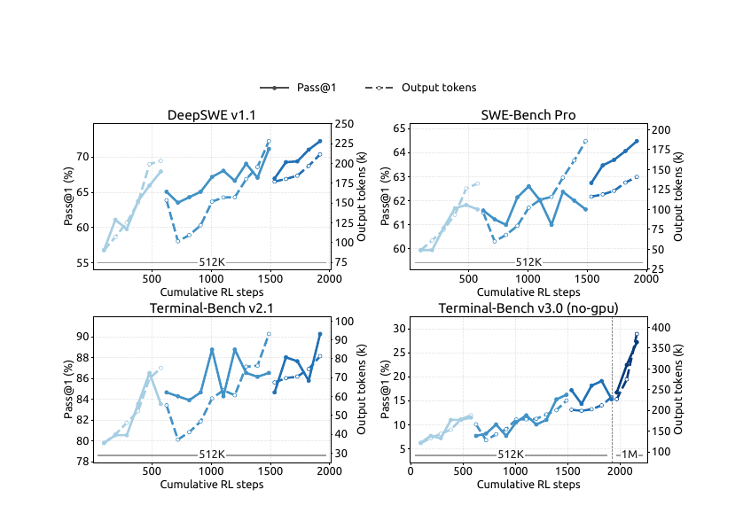
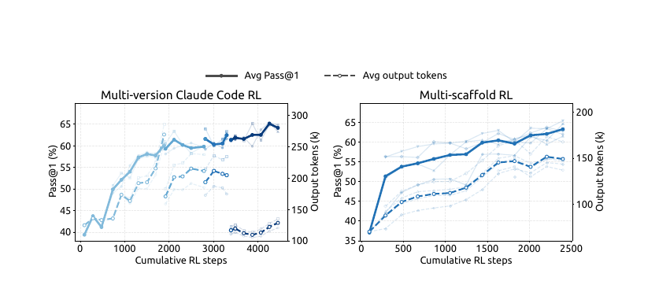
从 DeepSeek-V3 过渡到 V4 时，智能体训练环境的数量与多样性迅速增长，促使我们构建 DeepSeek 弹性计算（DSec）——面向大规模智能体训练与评测的生产级沙箱平台。其初始设计解决异构执行环境、可扩展镜像分发、多种隔离后端、高密度资源管理、命令轨迹日志与抢占安全恢复等问题。V4.1 训练进一步把需求推高到数百万并发沙箱实例，承载多样的 harness、平台、代码仓库、软件依赖与任务专属服务。在这一规模下，主要瓶颈转向数据中心可扩展性、负载隔离、单节点计算密度，以及遏制日益强大的智能体的不当行为。以下简述关键设计。
除模型架构与硬件进步外，输出 token 数是服务成本的另一关键决定因素，直接关系真实应用中的成本-质量折中。为此我们在强化学习期间引入标量力度（effort level）b 作为显式条件信号，适用于单轮推理与多轮智能体任务。具体做法是在系统提示前加一条指令：
其中 b ∈ {1, …, 100} 表示请求的力度。对每条训练 prompt x，在每个力度 b ∈ B 下采样 Mb 条响应：zb,j ~ πθ(·|x, b)。共享同一 (x, b) 的响应构成一个子组，组内奖励做均值中心化以计算组相对优势——不同力度档的响应不直接比较。力度相关的行为通过让奖励中的长度分量依赖 b 来在子组内诱导：给响应 zb,j 的奖励加上长度惩罚项
其中 ℓb,j 为推理 token 数，Lnorm 为参考长度，Cmax 为单轨迹最大扣分上限。token 惩罚系数随请求力度指数衰减：
其中 k0 为基础惩罚系数，bmin 为训练力度集最小值，Δb 为训练力度档平均间距，λ 控制惩罚衰减速率。b 每增加 τ，惩罚系数乘以 e−1。k0 控制压向更短推理的总体压力；τ 越小惩罚衰减越快，力度档之间 tends 产生更大的行为分离。附录 C 给出 k(b) 指数参数化的边际效用动机。
部署时，标量 b 为模型推理强度提供灵活控制接口：改变 b，单个模型检查点即可在习得的成本-质量前沿上的不同工作点之间移动，适配不同延迟、token 预算与解质量需求。训练虽只用有限力度档，部署时可用中间值引出插值的推理行为，为测试时资源分配提供细粒度高效机制。在我们 2026 年 9 月上线的生产部署中，公开 API 暴露三档预设推理力度——max、high、low——直接映射到该标量接口。如表 2 所示，三档分别对应 b = 100、75、50；API 用户无需改动模型权重或解码配置，即可选择习得成本-质量前沿上的工作点。
| API 档位 | 力度值 b |
|---|---|
| max | 100 |
| high | 75 |
| low | 50 |
LLM 的 RL rollout 长尾问题一直是训练效率的主要瓶颈。为此，我们扩展后训练基础设施以支持样本异步生成（Zeng et al., 2026; Team et al., 2026b），通过维持足够高的并发显著缓解 rollout 长尾。现在几乎所有 RL 与 OPD 任务都启用了异步训练，rollout 效率大幅提升。
我们把 rollout 与训练共置在同一物理设备上、分时共享执行，免去两阶段间的手工资源调配。每个任务指定在途样本数上界，系统在 rollout 阶段全程维持该上界。
我们评估了三种维持目标 rollout 并发的派发粒度，最终采用样本级派发：一旦新完成样本数达到下一个 prompt 的 GRPO 组大小，即派发该 prompt，不管这些完成来自哪些组。这使训练全程保持平稳的 rollout 并发。在此之前尝试过两种粒度：最初在开始时多派发若干批、每次训练迭代后补足整批，但导致训练指标剧烈震荡，说明批级粒度太粗；后改为 prompt 级派发（一个 GRPO 组完成后派发新 prompt），但容易卡在组内长尾样本上，难以平稳维持目标并发。
训练样本积累足够后，训练抢占进行中的 rollout。训练期间我们使用拼接式路由重放（concatenated routing-replay）：对跨多个检查点的样本，拼接各 rollout 段产生的专家路由，而不是用新检查点丢弃并重算路由信息。
异步生成提升 rollout 效率的同时带来两个可能损害训练质量的副作用。其一，产生长度分布偏差，尤其在训练早期——短序列先完成，主导初期训练批。其二，不可避免产生离策略（off-policy）样本——其 token 部分或全部由较早检查点生成。两类问题需要不同处理。
异步 RL 框架中，rollout 阶段会周期性中断以切换到更新后的策略检查点。我们力求这一过程无缝：中断应近乎瞬时，被中断的 rollout 应像从未停止一样恢复。
为及时停止 rollout，我们支持 token 级中断：生成可在任意 token 边界暂停。训练数据收集足够后，所有在途样本几乎立即停止，系统无延迟进入训练阶段。为在检查点切换间保留 rollout 进度，KV 缓存与专家路由等 rollout 状态在生成期间以 token 粒度持久化；用新检查点恢复时直接复用持久化状态，免去重新预填充成本，被中断样本从原位精确继续。由于需要保留所有在途样本的状态，我们执行样本粒度的垃圾回收——样本完成即释放其状态。除检查点切换外，同一套快速中断与无缝恢复机制还让训练作业能及时响应集群调度抢占信号而不丢进度，提升整体集群利用率。
作为后训练最后阶段，最终的全词表 OPD 任务在全部领域的数据集上、使用 40 多个教师模型训练，同样采用异步生成提升 rollout 效率。由于各领域训练流程差异，每个领域的最佳教师可能来自模型发展的不同阶段；教师模型彼此之间及与学生之间架构也可能不同。我们的后训练基础设施可轻松支持这种设定：支持教师数量实际上无上限的异构架构全词表 OPD，并在教师间以可忽略成本高效切换（DeepSeek-AI, 2026b）。OPD 阶段还需要训练中动态重配置：我们持续跟踪模型能力，可能调整训练配方——数据配比、每数据集并发上限、活跃教师等。同步训练中 rollout 批提供显式配置边界，这类变更很直接；异步设定下不同配置生成的样本可能在途共存，我们的基础设施支持配置间的一致切换，不中断 rollout 或训练。
后训练评测主要聚焦推理与智能体能力；知识密集型表现主要由预训练决定，已在表 1 报告。推理评测使用 GPQA Diamond（Rein et al., 2023）、Humanity's Last Exam（Phan et al., 2025）、Codeforces（内部基准）、MathArena Apex（Dekoninck et al., 2025），temperature 与 top-p 均为 1.0。智能体评测覆盖四类：
代码智能体评测中，DeepSeek-V4.1-Flash 使用 DeepSeek Harness Minimal 模式、1M token 上下文窗口、temperature 1.0、top-p 0.95。为对齐官方设置，DeepSWE v1.1 使用 mini-SWE harness；SEC-Bench Pro 因其会话紧凑设计而专门使用 Claude Code harness；视觉智能体任务使用 512k 上下文的 Claude Code harness（temperature 1.0、top-p 0.95）；Agents' Last Exam 与 AutomationBench 用其官方脚手架。其他编码脚手架下的表现见表 4。
为抑制编码智能体评测中的 reward hacking，我们限制网络访问并从环境剥离 Git 历史；还自动清除各环境中的临时构建与包缓存——包括 Go module 缓存（go/mod）、node_modules 依赖产物、编译的 .jar 文件与 Python pycache 目录。尽管有这些预防措施，测试中仍观察到投机取巧行为——例如在 CyberGym 中反编译 Ubuntu Linux 核心包寻找漏洞。随着模型能力增强，标准评测基础设施（如 Docker 容器与验证脚本）越来越容易被模型「钻空子」。我们敦促更广泛的研究社区在设计下一代基准时，优先考虑检测与缓解这类行为。
| 基准（指标） | Opus-5 Max | GPT-5.6 Sol Max | K3 Max | GLM-5.3 Max | DS-V4-Pro Max | DS-V4-Flash Max | DS-V4.1-Flash Max |
|---|---|---|---|---|---|---|---|
| 推理 | |||||||
| GPQA Diamond（Pass@1） | 93.4 | 94.1 | 92.9 | 88.1 | 92.4 | 89.9 | 90.9 |
| HLE（Pass@1） | 56.3 | 44.5 | 43.5 | 42.0† | 42.7† | 37.8† | 36.8（39.1†） |
| Codeforces（Rating） | – | – | – | – | 3348 | 3289 | 3471 |
| MathArena Apex（Pass@1） | – | – | 65.6 | – | 65.3 | 58.6 | 65.6 |
| 智能体 | |||||||
| Terminal-Bench 2.1（Pass@1） | 89.1 | 88.8 | 88.3 | 88.2 | 87.9 | 82.7 | 90.6 |
| Terminal-Bench 3.0（Pass@1） | 43.3 | 34.4 | 17.7 | 28.3 | 11.8 | 7.6 | 30.0 |
| Terminal-Bench 4.0（Pass@1） | 51.8 | 39.9 | 12.6 | 37.9 | 12.4 | 7.0 | 31.2 |
| DeepSWE v1.1（Resolved） | 74.0 | 73.0 | 67.5 | 66.9 | 62.7 | 54.4 | 74.2 |
| ProgramBench（Almost@1） | 37.0 | 23.0 | 17.5 | 19.0 | 15.5 | – | 20.3 |
| NL2Repo-Bench（Score） | 75.3 | 56.8 | 58.0 | 58.0 | 61.5 | 54.2 | 65.4 |
| CyberGym（Pass@1） | – | 84.5 | 80.0 | 84.5 | 83.3 | 76.7 | 88.1 |
| SEC-Bench Pro（Pass@1） | – | 74.3 | – | – | 56.4 | 30.9 | 62.8 |
| ExploitGym（Pass@1） | 22.1 | 33.7 | – | 15.0 | 5.4 | 1.8 | 15.3 |
| HLE w/ tools（Pass@1） | 63.6 | – | 59.8 | 62.5 | 60.0 | 51.5 | 63.9 |
| AutomationBench（Pass@1） | 50.3 | 45.8 | 46.7 | 48.8 | 43.2 | 37.7 | 54.8 |
| Agents' Last Exam（Pass@1） | 28.6 | 26.7 | 27.6 | 28.5 | 25.7 | 25.2 | 31.8 |
| Chartography w/ tools（Pass@1） | 84.0 | 79.9 | 68.1 | – | – | – | 78.9 |
| BabyVision w/ tools（Pass@1） | 94.1 | 88.9 | 85.7 | – | – | – | 89.6 |
| ZeroBench-main w/ tools（Pass@5） | 52.0 | 53.0 | 41.0 | – | – | – | 49.0 |
如表 3 所示，DeepSeek-V4.1-Flash 在推理与智能体基准上较前代 DeepSeek-V4-Flash 全面大幅升级，同时比肩或超越顶级开源与专有模型。
在核心推理任务上，DeepSeek-V4.1-Flash 达到 Codeforces 评分 3471，超过 DeepSeek-V4-Flash（3289）与 DeepSeek-V4-Pro（3348）；MathArena Apex 取得 65.6% Pass@1，完全追平最佳开源基线 Kimi-K3（65.6%），并超过 DeepSeek-V4-Pro（65.3%）；GPQA Diamond 达到 90.9%，较 DeepSeek-V4-Flash（89.9%）稳步提升。
智能体任务上的提升更为显著：DeepSWE v1.1 达到 74.2% 解决率，较 DeepSeek-V4-Flash（54.4%）大幅跃升，并超越 Opus-5（74.0%）、GPT-5.6 Sol（73.0%）等领先专有模型；Terminal-Bench 2.1 达 90.6%，超过 Opus-5（89.1%）与 GLM-5.3（88.2%）；在 AutomationBench（54.8%）与 Agents' Last Exam（31.8%）上，同时领先开源对手与顶级闭源系统。尽管体量紧凑，DeepSeek-V4.1-Flash 展现出最先进的智能体能力，大幅缩小与前沿闭源模型的差距，同时在开源模型中确立明显优势。
网络安全任务上，DeepSeek-V4.1-Flash 在开源模型中树立新的最优水平。鉴于这类能力的两用性质，我们鼓励社区负责任地使用，例如防御性安全研究与漏洞修复。视觉智能体任务上，模型展现出稳健能力，尤其在需要视觉推理与复杂专业图表分析的场景；它超越了领先开源模型 Kimi-K3，但我们也承认与领先闭源方案相比仍有可测差距。
除峰值性能外，DeepSeek-V4.1-Flash 暴露推理力度（reasoning effort）设置，允许用户以可控方式用推理成本换准确率。如图 9 所示，在推理与智能体基准上，准确率与输出长度都随力度稳步上升：力度从 25 提到 100，八个推理密集基准的平均 Pass@1 从 67.1% 升至 76.3%，DeepSWE v1.1 从 66.0% 升至 74.2%，Terminal-Bench 2.1 从 82.4% 升至 90.6%，代价约为 2.5 倍输出 token。值得注意的是，单响应推理上学到的力度控制忠实地迁移到了长时程智能体轨迹——它控制跨轮次的探索与验证总量。收益是前加载的：60–80 区间已恢复最大设置大部分准确率，而 token 预算不到其一半；从 80 到 100 的最后一步使智能体轨迹延长 1.6–1.8 倍却只有边际提升。因此 max 档最好留给最难的任务，中等力度对日常智能体使用是更优的成本-性能平衡点。
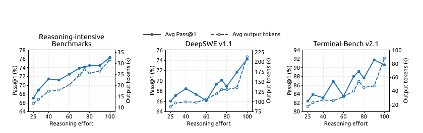
图 9 报告了不同预算值下的性能与平均响应长度。随推理力度增大，模型产生逐步更长的推理轨迹，推理密集基准与软件工程任务的准确率单调改善，最大增益集中在低中预算区间、此后收益递减。尽管 RL 只涉及有限力度档，标量力度实现了特定范围内响应长度的灵活插值控制：从业者可在平滑连续体上权衡质量与延迟及 token 成本——延迟敏感应用可以低力度运行、接受适度准确率下降；困难任务可调高力度恢复完整推理能力。公开 API 暴露三档预设力度：low、high、max 分别对应力度值 50、75、100。
实践中模型很少部署在单一固定智能体框架内：不同脚手架的系统提示、工具定义、上下文管理策略与交互协议各异，过拟合某一 harness 的模型换到另一个可能大幅退化。为评估模型对此类变化的鲁棒性，我们的比较覆盖 6 个脚手架族的 8 种配置：Claude Code（Anthropic, 2026）、Codex（OpenAI, 2026）、OpenCode（Anomaly, 2026）、Pi（Zechner, 2026）、mini-SWE（Yang et al., 2024），以及 Minimal、Standard、PTC 三种模式的 DeepSeek Harness（DSH）（DeepSeek-AI, 2026a）。每个脚手架保持模型检查点、解码配置与任务集一致，只更换 harness（含原生系统提示、工具 schema 与轮替逻辑）。表 4 报告 Max 推理力度（100）下 DeepSWE v1.1 与 Terminal-Bench v2.1 的表现。
| 基准（指标） | Claude Code | Codex | Open Code | Pi | mini- SWE | DSH Minimal | DSH Standard | DSH PTC |
|---|---|---|---|---|---|---|---|---|
| DeepSWE v1.1（Resolved） | 69.8 | 65.6 | 65.5 | 66.2 | 74.2 | 72.6 | 70.5 | 67.6 |
| Terminal-Bench v2.1（Pass@1） | 88.0 | 84.1 | 85.0 | 86.1 | 90.3 | 90.6 | 85.8 | 85.8 |
注：所有脚手架在 DeepSWE v1.1 上每任务 N=8 采样、Terminal-Bench v2.1 上 N=3；运行使用 Linux 容器、temperature 1.0、top-p 0.95、1M token 上下文窗口、每智能体 max_steps=500 模型生成轮次；Terminal-Bench v2.1 无网络访问。Claude Code 评测了四个版本（各版本结果与平均见附录表 5），本表报告 v2.1.251。更多脚手架配置见附录 B.1。
模型的智能体能力在不同提示与工具接口的脚手架族之间迁移良好，而非依赖特定 harness 的约定。随着交互协议与工具抽象变化，性能保持稳健，说明其智能体行为并不与单一脚手架设计紧耦合。这种鲁棒性与我们合成训练数据（第 5 节）中环境、工具 schema 与交互格式的多样性一致——后者正是为鼓励跨脚手架泛化而设计。
为探索复杂任务上的多智能体协作，我们用 DeepSeek Harness 的 Agent Team 模式对 DeepSeek-V4.1-Flash 做了初步实验。
多智能体 harness。使用 Agent Team 模式的 DeepSeek Harness：主智能体（lead）默认可通过 spawn_teammate 异步创建具名、持久的队友；每个队友接受委派任务，以无主智能体历史的 fresh 模式或带主智能体已完成轮次一次性快照的 fork 模式启动。所有智能体共享同一仓库 checkout，编辑即时互相可见。智能体通过持久化对等邮箱（peer mailbox）通信：send_message 发送的消息在运行中队友的下一个步骤边界送达、为空闲队友开启新轮次、或唤醒非活跃队友。在队友任务生命周期内，主智能体用 list_agents 监控运行状态，用 wait_agent 等待状态、邮箱或共享任务变化；任务所有权、依赖与建议性写范围维护在共享任务板上（用四个 team_task_* 工具，更新时做版本检查）。需要干预时，只有主智能体能通过 interrupt_agent 打断队友当前轮次；所需工作完成后，主智能体审查并测试合并改动，产出最终响应。
训练。Agent Team 模式用组合 RL 奖励训练：任务表现 + 鼓励委派与智能体间通信的协作奖励 + 促进高效协调的推导延迟惩罚。推导延迟的算法：把执行事件及其协作依赖表示为有向无环图（DAG），按固定预填充/解码速率以 token 数赋成本、加上实测工具执行时间，取关键路径长度。这鼓励有效并行、惩罚不必要的串行工作与同步，且对服务侧批处理与排队延迟的敏感度更低。
性能。我们构建了 ProgramBench（Yang et al., 2026）的高置信子集：只保留参考解在隐藏测试集上通过率不低于 95% 的任务，得到 172 个「黄金」任务。我们还在 FrontierSWE v2（Kondra et al., 2026）上评测——它是 FrontierSWE 更大、更难的后续版本，方法学大幅改进；我们从当前公开任务中排除需要 GPU 的任务，构建 no-GPU 子集。我们在两个基准上、以显式每 rollout 墙钟时限评测单智能体与多智能体配置。此处结果为初步结果：我们比较观测到的最强多智能体配置与最强可用单智能体基线。ProgramBench 每任务最多 3 个 rollout（每配置 516 个计划 rollout），报告 Almost@1——单个 rollout 得分不低于 0.95 的比例；FrontierSWE v2 报告 Mean@5。ProgramBench 时限 1–12 小时，FrontierSWE v2 为 1–20 小时；每个时限处，指标由时限到达时已有的输出计算。
如图 10 所示，两个基准上多智能体配置在每个时限都优于单智能体。ProgramBench 上多智能体 Almost@1 从 1 小时的 13.59% 升至 8 小时峰值 30.04%，单智能体为 12.79% 与 20.39%；FrontierSWE v2 上多智能体 Mean@5 从 1 小时 13.50% 升至 20 小时 32.90%，单智能体从 10.50% 升至 28.20%。
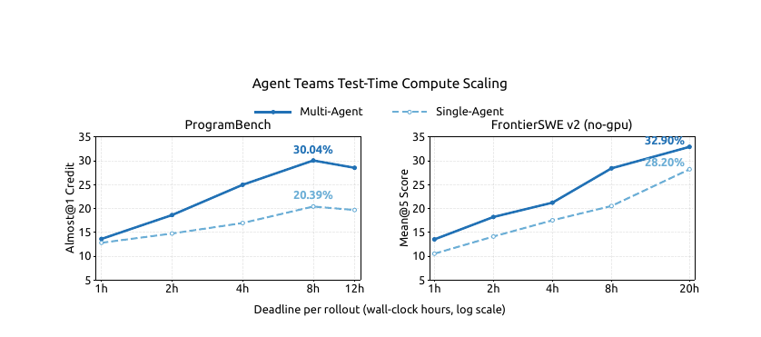
本文介绍了 DeepSeek-V4.1-Flash——一个支持最长 100 万 token 上下文的多模态 MoE 模型。通过模型架构、缓存精度与部署策略的联合优化，DeepSeek-V4.1-Flash 把 KV 缓存压缩推向极限。其因果编码器-解码器（CED）架构使模型预填充每 token 仅激活 8B 参数（解码 16B），提升重输入智能体负载的成本效率；等序列长度下，压缩稀疏注意力 2（CSA2）的跨层 KV 缓存复用与 FP4 KV 缓存将全局 KV 缓存占用（常驻 HBM）降到每 token 890 字节，约为 DeepSeek-V4-Flash 的 1/4；SWA 有界重放进一步把持久化 KV 缓存占用（驻留 SSD 或主机内存）降到约 1/8。这些缩减缓解了 HBM 与 SSD 容量压力，同时模型整体性能显著优于 DeepSeek-V4-Flash。尽管参数规模远小于 GLM-5.3、Kimi-K3 等当代开源模型，DeepSeek-V4.1 在关键基准上达到相当——乃至在若干任务上更优——的表现。
尽管 DeepSeek-V4.1-Flash 相对 DeepSeek-V4-Flash 大幅简化了若干架构组件，新引入的架构变更也创造了尚未完全刻画的鲁棒性边界。我们的内部评测覆盖多样的测试用例与边界条件，未观察到模型能力的系统性退化；但任何有限测试集都无法覆盖所有极端输入与部署条件。CSA2 的潜在选择错误与 SWA 有界重放的近似状态重建，仍可能在未测试的边界情形下造成能力退化。接下来我们将继续扩展压力测试与评测体系，特别关注长上下文稀疏检索与缓存恢复边界的 SWA 状态重建；还将监控真实负载，系统刻画潜在失败模式与鲁棒性边界，进一步提升模型在极端条件下的鲁棒性。
随着 AI 模型性能日益强大，标准评测基准日益饱和。DeepSeek-V4.1-Flash 的性能已紧逼 Fable-5、GPT-6 Astra 等顶级模型——在日常应用中提供高度相当的用户体验——但在最难的任务上仍有差距。基准分数差距虽小，但这种持平并不意味着模型在复杂、高难度推理与边缘情形上达到领先闭源系统的前沿能力。
因此，我们将持续更新评测协议，确保对最先进推理边界的严格评估。在持续降低模型成本的同时，我们相信模型智能的进一步进步将依赖数据、模型容量与 RL 的协同扩展。以 DeepSeek-V4.1-Flash 为新起点，我们将继续探索模型能力极限，系统性攻克大规模数据合成与 RL 扩展的关键挑战；还将积极整合模型-harness 协同设计，使联合系统共同演进、共同优化。通过同步推进成本降低与能力扩展，我们希望让高性能智能体更易获得、更易部署，进一步降低各行各业采用 AI 技术的门槛。
作者按名字字母序排列；带 * 者为已离队成员。名单分为 Research & Engineering（研发，约 700 人）与 Business & Compliance（商务与合规，约 160 人）两部分，完整名单见原文 PDF 第 46–47 页，此处不再复制。译注：核心作者包含梁文锋（Wenfeng Liang）及 DeepSeek 各方向负责人。
所有脚手架运行在 Linux 任务容器中，使用表 4 的共享评测设置。每次运行从基准任务描述出发，使用脚手架运行时或评测集成提供的提示、任务模板与工具定义，不添加实验性系统提示。
| 基准（指标） | v2.1.105 | v2.1.238 | v2.1.251 | v2.1.259 | 平均 |
|---|---|---|---|---|---|
| DeepSWE v1.1（Resolved） | 68.4 | 68.7 | 69.8 | 68.6 | 68.9 |
| Terminal-Bench v2.1（Pass@1） | 87.3 | 88.4 | 88.0 | 87.6 | 87.8 |
注：平均由四个版本的未取整 Pass@1 计算。
图 11 的全部六个面板显示：调高推理力度会拉长轨迹——每个「脚手架×基准」组合中每条轨迹平均输出 token 都随力度单调增长；Pass@1 只是大体跟随增长但并不单调，多数面板在中间力度档出现平台与回落。三个脚手架的标定也不同：DeepSWE v1.1 上 Claude Code 曲线最平、额外 token 花费相对少；DeepSeek Harness（Minimal）起点最低、在最大 token 成本下增益最大；mini-SWE 居中。Terminal-Bench v2.1 上三个脚手架压缩在窄带内，最大力度下排序为 DeepSeek Harness（Minimal）> mini-SWE > Claude Code：任务接近饱和时，脚手架选择的重要性不亚于力度档位。
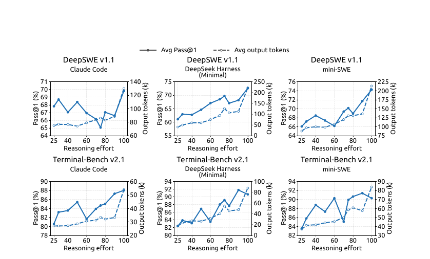
图 12 表明推理力度设置对输出长度与准确率都给出平滑、行为良好的控制，且在覆盖竞赛数学、科学问答、开放域知识与代码的全部八个基准上一致。长度侧：力度从 25 升到 100，每个基准的平均响应都可预测地放大——统一放大 2.0–3.1 倍，AIME 2026 从每响应 4.6k token 升至 11.4k，MathArena Apex 2025 从 29.1k 升至 86.1k——没有失控增长或异常，任何档位的计算成本都可事先估计。准确率沿同样平滑轨迹、在每个基准上都朝正确方向响应，没有基准随力度增大而退化：MathArena Apex 2025 提升 +40.3 分（25.3%→65.6%），Apex 2025 Shortlist +11.5，已近饱和的基准保持稳定（GPQA Diamond +1.3、LiveCodeBench +2.6），AIME 2026 达到满分 100%。模型由此暴露一个单一、可靠的旋钮，以受控、可预测的方式移动成本-准确率工作点，让每种部署都能选择匹配其延迟与计算预算的力度档，而不牺牲准确率。
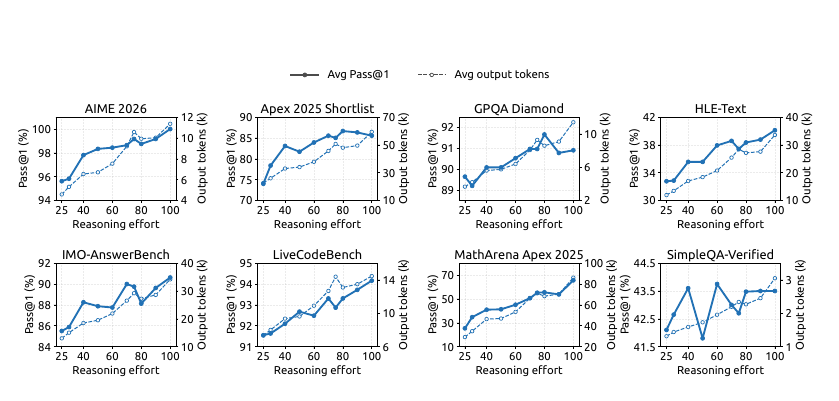
标量力度变量提供部署时的成本-质量权衡控制，而不施加硬性 token 预算。RL 期间，低力度档施加更强 token 惩罚，高力度档允许更多计算。本节给出指数惩罚日程的简化动机。
对在力度 b 下生成 ℓ 个推理 token 的轨迹，长度扣分为
其中 Lnorm 为参考长度，Cmax 为扣分上限。力度相关的 token 惩罚系数为
其中 k0 为最低力度档 bmin 的惩罚系数，τ 控制惩罚衰减速率。
动机如下：考虑固定问题 x，记 px(ℓ) 为经 ℓ 个推理 token 后被解出的概率。在未封顶区域，定义偏好推理长度
内点最优的一阶条件为
其中 p′x(ℓ) = dpx(ℓ)/dℓ 是增加推理带来的解题概率边际改进。假设该边际收益在相关工作区间内近似指数衰减：
其中 ax > 0 为实例相关尺度，sx > 0 决定衰减速率。将式 (12)(15) 代入 (14)：
其中 Cx = sx log(axLnorm) 与 b 无关。因此在该局部模型下，指数惩罚日程在请求力度与偏好推理长度之间产生简单的线性趋势。对两个力度档 b2 > b1，预测长度差为
因此 k0 主要控制压向更短推理的总体压力，τ 控制对力度的预测敏感度。
该推导是局部奖励层面的近似，并非断言实测平均长度必须线性或逐点单调。实际行为可能偏离，原因包括：力度指令会直接改变推理策略、生成是随机的、智能体轨迹轮数不同、子组奖励归一化改变优化强度等。分析还假设惩罚封顶未生效的内点解；一旦触及封顶，边际 token 惩罚为零，封顶区域需另行考虑。
J. Ainslie et al. GQA: Training generalized multi-query transformer models from multi-head checkpoints. arXiv:2305.13245, 2023.
E. Alvarez et al. Introducing NVFP4 for efficient and accurate low-precision inference. NVIDIA Developer Blog, 2025.
Anomaly. OpenCode. github.com/anomalyco/opencode, 2026.
Anthropic. Claude Code. code.claude.com/docs/en/overview, 2026.
Y. Bai et al. LongBench v2: Towards deeper understanding and reasoning on realistic long-context multitasks. ACL 2025.
Y. Bai et al. IndexCache: Accelerating sparse attention via cross-layer index reuse. arXiv:2603.12201, 2026.
W. Brandon et al. Reducing transformer key-value cache size with cross-layer attention. NeurIPS 37, 2024.
L. Chen et al. Powerattention: Exponentially scaling of receptive fields for effective sparse attention. arXiv:2503.03588, 2025.
L. Chen et al. BabyVision: Visual reasoning beyond language. arXiv:2601.06521, 2026.
M. Chen et al. Evaluating large language models trained on code. arXiv:2107.03374, 2021.
X. Cheng et al. DSpark: Confidence-scheduled speculative decoding with semi-autoregressive generation. arXiv:2607.05147, 2026a.
X. Cheng et al. Conditional memory via scalable lookup: A new axis of sparsity for large language models. arXiv:2601.07372, 2026b/c.
T. Cobbe et al. Training verifiers to solve math word problems (GSM8K). arXiv:2110.14168, 2021.
K. Dekoninck et al. MathArena. 2025.
D. Dai et al. DeepSeekMoE: Towards ultimate expert specialization in mixture-of-experts language models. arXiv:2401.06066, 2024.
DeepSeek-AI. DeepSeek-V3 Technical Report. arXiv:2412.19437, 2024.
DeepSeek-AI. DeepSeek-V4 Technical Report. 2026a/b.
J. Deng et al., 2026; M. Ding et al. NL2Repo-Bench, 2025; DataCurve. DeepSWE, 2026.
L. Dua et al. DROP: A reading comprehension benchmark requiring discrete reasoning over paragraphs. NAACL 2019.
D. Du et al. SuperGPQA. 2025.
GLentis et al., 2025; A. Garre et al. Chartography, 2026; W. Gao et al. HySparse, 2026.
X. Gu et al. Minillm / on-policy distillation of language models, 2024. J. Haas et al. SimpleQA-Verified, 2025.
D. Hendrycks et al. Measuring mathematical problem solving with the MATH dataset. NeurIPS 2021.
D. Huang et al. C-Eval: A multi-level multi-discipline Chinese evaluation suite. NeurIPS 2023.
D. Jacob et al. Quantization and training of neural networks for efficient integer-arithmetic-only inference (QAT). CVPR 2018.
K. Jordan et al. Muon: An optimizer for hidden layers in neural networks. 2024.
M. Kazemi et al. BigBench Extra Hard (BBEH). 2025.
S. Kazemzadeh et al. ReferitGame / RefCOCO. EMNLP 2014; L. Ma et al. RefCOCO+/g, 2016; L. Yu et al., 2016; V. Nagaraja et al., 2016.
S. Lee et al. SEC-Bench Pro, 2026. B. Li and J. Liu. FlashMLA, 2025. H. Kondra et al. FrontierSWE v2, 2026.
D. Loshchilov and F. Hutter. Decoupled weight decay regularization (AdamW). ICLR 2019.
A. Marafioti et al. SmolVLM. 2025. T. Marten et al. Terminal-Bench 3.0 / 4.0, 2026a/b. L. Mao et al., 2016.
R. Merrill et al. Terminal-Bench 2.1. 2026. Y. Nesterov. A method for solving the convex programming problem (Nesterov momentum). 1983.
OpenAI. GPT-5 / SwiGLU clamping reference, 2026 (cited 2025).
L. Phan et al. Humanity's Last Exam. 2025. Q. Qian et al. DeepSelect, 2026. B. Roberts et al. ZeroBench, 2025.
D. Rein et al. GPQA: A graduate-level Google-proof Q&A benchmark. 2023. M. Rouhani et al. Microscaling data formats (MX) for deep learning. 2023.
Scetbon et al. SinkGD, 2025; M. Shepard and A. Salimans. AutomationBench, 2026; M. Shazeer. GLU variants improve transformer (SwiGLU). 2020.
M. Shazeer and B. Stern. Adafactor. ICML 2018. M. Shi et al. MGSM. 2023. J. Sun et al. YoCo. 2024; ALE / YOIO / misc., Sun et al. 2026a/b.
M. Suzgun et al. Challenging BIG-Bench tasks (BBH). 2022. K. Team et al. Kimi-K3 (2026a); misc. team citations 2025/2026b.
S. Tong et al. Cambrian-1 / CVBench. 2024. C. Wang et al. Baidu / modality-specific load balancing, 2024a; X. Wang et al. MMLU-Pro. NeurIPS 2024b.
G. Wang et al. CyberGym (2026c) / ExploitGym (2026b) / TileKernels (2026a); Lu and Lab. On-policy distillation, 2025; Wen et al. 2025.
H. Xu et al. (indexer sparsity), 2026a/b; Z. Zechner. Pi. 2026; A. Zeng et al. (GLM-5 / async RL), 2026.
B. Zellers et al. HellaSwag. ACL 2019; X. Yue et al. MMMU-Pro. 2025; Yuan et al. 2026; Zhai et al. SigLIP. ICCV 2023.
B. Zhang and R. Sennrich. RMSNorm. NeurIPS 32, 2019; Y. Zhang. On the principles behind neural network optimizers. arXiv:2608.16760, 2026.
Y. Zhang et al. Why transformers need Adam: A Hessian perspective. NeurIPS 37, 2024; Adam-mini. ICLR 2025a; DistTrain. SIGCOMM 2025b.
C. Zhao et al. DeepGEMM. github.com/deepseek-ai/DeepGEMM, 2025. W. Zhong et al. AGIEval. 2023. T. Y. Zhuo et al. BigCodeBench. ICLR 2025.
—— 全文完 —— 译本仅供学习研究参考，版权归原作者 DeepSeek-AI 所有。模型权重：huggingface.co/deepseek-ai/DeepSeek-V4.1-Flash